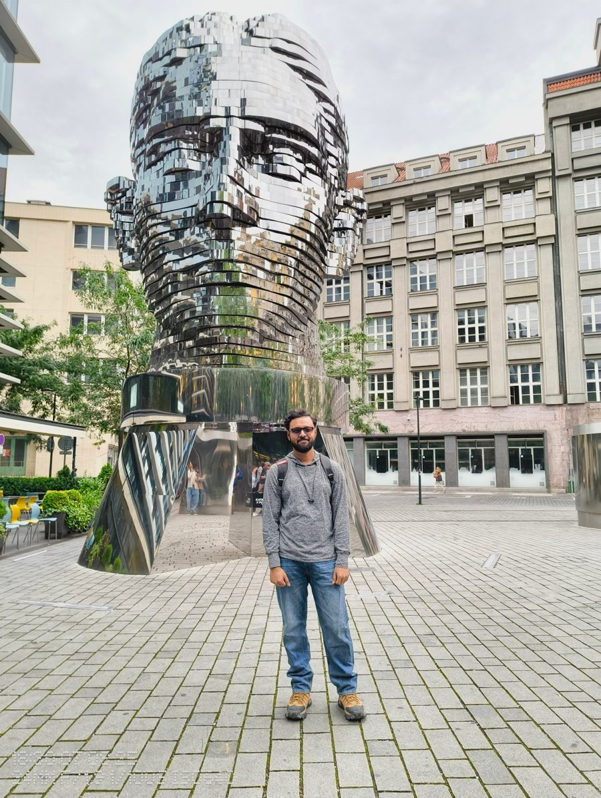

Mathematician
Presently I am working in mod p representation theory of p-adic groups.
Let F be a non-archimedean local field of residue characteristic p, and let p be a fixed algebraic closure of 𝔽p containing the residue field kF of F. Throughout this thesis we work with smooth p-representations of SL2(F).
The thesis is built around two closely related problems in the mod-p representation theory of SL2(F), both governed by compact inductions and by the action of Hecke operators on certain invariant vectors. The first is Hecke-theoretic: we study the explicit action of spherical and Iwahori–Hecke algebras on certain invariants of compactly induced representations and derive structural results about some natural modules over these algebras. The second problem is representation-theoretic: here we consider the restriction of irreducible smooth mod-p representations of SL2(F) to its Borel subgroup and ask whether the Borel subgroup already controls irreducibility and intertwining.
These two problems are closely connected: the explicit Hecke computations in the first part provide the key finiteness input needed in the supersingular case of the second. In particular, the finiteness results for Hecke-submodules allow us to remove certain admissibility assumptions and thereby treat all irreducible smooth mod-p representations in the restriction problem, rather than only the admissible ones.